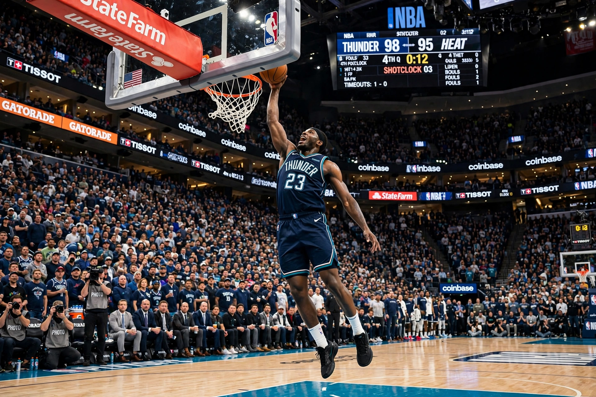

National Basketball Association

| Sport | Basketball |
|---|---|
| Founded | June 6, 1946 (as the BAA), New York City |
| Teams | 30 (29 in the US, 1 in Canada) |
| Commissioner | Adam Silver |
| Most titles | Boston Celtics (18) |
The National Basketball Association (NBA) is a professional basketball league in North America, widely considered the premier men's professional basketball league in the world. It comprises 30 teams, divided into the Eastern and Western Conferences, each with three divisions of five teams.
History
The league was founded in New York City on June 6, 1946, as the Basketball Association of America (BAA) and adopted the NBA name in 1949 after merging with the rival National Basketball League. In 1976 it absorbed four teams from the American Basketball Association. The league's popularity surged in the 1980s behind the rivalry of Magic Johnson's Los Angeles Lakers and Larry Bird's Boston Celtics, and again in the 1990s with Michael Jordan's Chicago Bulls, winners of six championships.
Season format
Each team plays an 82-game regular season from October to April, followed by playoffs culminating in the NBA Finals in June. An in-season tournament, the NBA Cup, was introduced in 2023. The Boston Celtics hold the record with 18 championships. The league's annual draft, All-Star Weekend and global preseason tours support an international audience; stars of the modern era include LeBron James, Stephen Curry and Kevin Durant, and the league has seen a growing number of international Most Valuable Player winners such as Giannis Antetokounmpo and Nikola Jokić.